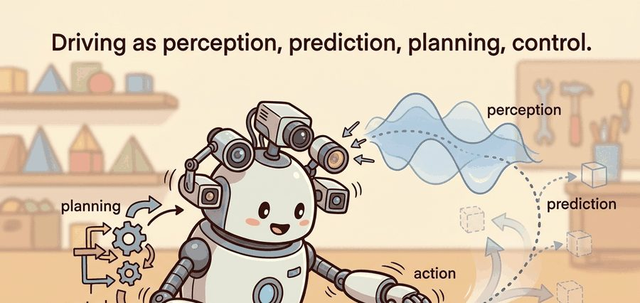
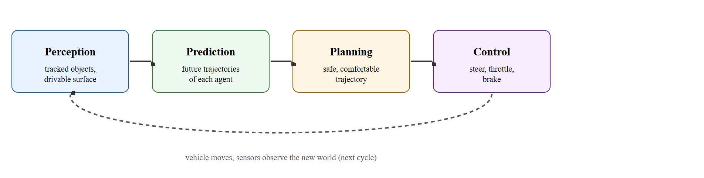

The hardest part of driving is not seeing the world or steering the wheel; it is the handoff in between, where one subsystem's confident output becomes another's silent assumption.
On the architecture of the modern driving stack

This section assumes familiarity with the agent-environment loop from section 2.7 and with system architectures from section 3.8; those sections establish the vocabulary of state, observation, and action that the four-stage stack inherits. The perception and control mechanics introduced here are developed in depth in sections 48.2 and 48.7, the prediction and planning stages are treated in sections 48.3 and 48.4, and the safety and closed-loop evaluation lens recurs in Part XI alongside robustness methods in section 53.4.
A cyclist cuts across an intersection at 25 km/h. In the next 100 milliseconds, a rooftop lidar must detect the bike, a tracker must hold the detection across frames, a prediction model must decide where the cyclist is heading, a planner must find a trajectory that avoids every likely path, and a controller must translate that trajectory into a precise brake command. Miss any handoff and the safety gain from the other three stages disappears entirely. Autonomous driving has become the canonical stress test for embodied AI precisely because it chains perception, prediction, planning, and control into one real-time loop where every interface can fail. Here you will map that loop end to end, understand what each stage guarantees to the next, and see why the hardest engineering problems live at the arrows between boxes, not inside them.
A self-driving car makes a life-or-death decision roughly every 70 to 100 milliseconds at a typical control rate, and no single stage of its software owns that decision: the label "autonomous driving" hides a closed loop that must ingest sensor streams, a map, and a route intent; estimate the state of the ego vehicle (the term the AV literature uses for "the car whose software is running this loop," to distinguish it from every other tracked vehicle) and of every relevant actor; commit to a trajectory; and convert that trajectory into steering, throttle, and brake commands at a fixed cycle rate. The loop is typically judged by route completion, collision rate, and safety margin, measured on the same scenarios for every candidate stack. As Figure 48.1A emphasizes, every arrow between those stages is itself an interface that can fail, which is where most of the engineering difficulty lives.
Real deployments run this loop at 10 to 20 Hz. A perception frame that arrives 150 ms late is not a slow frame; it is a wrong frame, because the planner will act on a world that has already moved. Treating the stack as a timed pipeline, not a static dataflow diagram, is the central discipline of the chapter. Figure 48.1.1 lays out these four stages and the loop they close through the world; keep it in view as the rest of the section walks each interface in turn.
The most instructive AV failures are not "the detector missed a pedestrian" but "the detector saw the pedestrian, the tracker dropped the track for two frames, and the planner therefore replanned through the gap." A perception improvement that never changes the planner's input does not reduce collisions. Always check whether an upstream win actually propagates to a downstream action.

Formally, driving is a partially observed Markov decision process run under hard real-time constraints. At cycle $t$ the vehicle receives an observation $o_t$ (camera frames, LiDAR sweeps, radar returns, GNSS (satellite positioning, e.g. GPS) or IMU (inertial measurement unit, an onboard accelerometer/gyroscope package)), estimates a state $\hat s_t$ (ego pose and velocity plus a set of tracked actors with positions, velocities, and classes), commits to an action $a_t$ (a trajectory or a direct control command), and transitions to $o_{t+1}$. The decomposition into perception, prediction, planning, and control is an engineering factorization of this single MDP that makes each piece testable in isolation.
So far: driving is modeled as a POMDP because the vehicle never observes the true world state directly, only sensor readings; perception's job is to turn those readings into a belief (a probability distribution over what the world's state actually is, not just one guess) that the rest of the loop can act on.
Partial observability matters in a physical vehicle because sensors have blind spots, occlusions, and range limits that computation alone cannot recover. A pedestrian hidden behind a parked truck is absent from $o_t$ regardless of algorithm quality. The planner must therefore act under genuine uncertainty about the true world state $s_t$, not just noisy measurement of a fully visible scene. Physical inertia makes this consequential. A 1 800 kg vehicle at 50 km/h needs roughly 20 m to stop, so decisions made on incomplete observations carry irreversible real-world consequences that differ fundamentally from replanning in simulation. To see the gap, note that the hidden pedestrian needs only three steps into the road before the vehicle is already inside its own braking distance. The planner must account for that pedestrian before any sensor ever sees them.
The POMDP (Partially Observable Markov Decision Process) machinery separates state estimation from decision-making. The perception stage maintains a belief over $s_t$ from the sensor model $p(o_t \mid s_t)$ and the motion model $p(s_t \mid s_{t-1}, a_{t-1})$. It then collapses that belief into a point estimate $\hat{s}_t$ with an associated uncertainty $\Sigma_t$. The planner optimizes expected cost over the whole distribution rather than a single assumed state. This is why prediction produces a set of weighted trajectories rather than one deterministic forecast: the weights are the residual probability mass the planner must hedge against.
Think of the belief update like a chef tasting a sauce that is partially hidden behind a cloud of steam. The chef cannot see the full pot, so they form a running guess about the sauce's saltiness based on the smell, the sound of the simmer, and what they added two minutes ago. When they finally dip a spoon, they do not discard all prior knowledge: they blend the new taste with their existing guess, weighted by how reliable each source is. Prediction handing the planner multiple weighted trajectories instead of one works the same way: each "mode" is one hypothesis about where the other driver might go, and the weight is how much of the chef's confidence rests on that hypothesis. The vehicle cannot act on one committed guess when uncertainty is genuine; it must hold all plausible futures simultaneously and choose a path that stays safe across all of them.
If each stage handles its piece so well, why do AV systems still surprise their engineers with failures? The factorization buys modularity at the cost of compounding error at every interface. A perception error (a false negative, an identity switch, localization drift) corrupts prediction's input; a prediction error (an unforecast lane change) corrupts planning's. So every interface needs its own metric, and the stack needs a closed-loop metric on top: passing each component benchmark does not guarantee a safe drive.
| Stage | Input | Output | Typical metric |
|---|---|---|---|
| Perception | raw sensor streams | tracked 3D objects, occupancy | mAP, MOTA (Multiple Object Tracking Accuracy), false-negative rate |
| Prediction | tracks plus map | multi-modal future trajectories | minADE (minimum average displacement error), minFDE (minimum final displacement error), miss rate |
| Planning | predictions plus route | ego trajectory | collision rate, comfort, progress |
| Control | ego trajectory | steer, throttle, brake | tracking error, jerk |
Input: sensor bundle $o_t$ (camera frames, LiDAR sweep, radar returns, GNSS/IMU); HD map $\mathcal{M}$; route intent $\rho$; previous ego state $\hat{s}_{t-1}$; set of tracked actors $\mathcal{A}_{t-1}$
Output: actuator command $a_t = (\delta_t, \tau_t, \beta_t)$ (steer angle, throttle, brake); updated state $\hat{s}_t$; safety margin $\sigma_t$
Trace the algorithm box with concrete numbers for a single 10 Hz cycle (budget 100 ms). Ego at position $s=0$ m, speed $v=12$ m/s; one lead actor at $s=30$ m, $v=8$ m/s. Step 1 (Perception): detection returns the lead with gap $=30-0=30$ m and a positional uncertainty $\sigma_i=0.4$ m; ego state $\hat s = (0,\,12,\,0)$, timestamp $\tau_\text{perc}=78$ ms. Step 2 (Latency check): $78 \le B_\text{perc}=80$ ms, so the frame is fresh, no stale flag. Step 3 (Prediction): constant-velocity forecast over horizon $H=2$ s gives the lead at $30 + 8\times 2 = 46$ m absolute, while ego at constant speed would reach $24$ m, so predicted future gap $= 46 - 24 = 22$ m. Step 4 (Occupancy): inflate the lead's predicted band by $3\sigma_i = 1.2$ m, marking $[44.8,\,47.2]$ m as occupied at $t+2$ s. Step 5 (Planning): desired gap $=1.5\times 12 = 18$ m; the cost-minimizing acceleration is $a = 1.0(8-12) + 0.5(30-18) = -4 + 6 = +2.0$ m/s$^2$ before clipping, but the actuator cap $a_\text{max}=2.0$ leaves it at $+2.0$ m/s$^2$. Step 6 (Safety gate): closing speed is $12-8=4$ m/s into a $30$ m gap, so $\text{TTC}=7.5$ s $\ge \text{TTC}_\text{min}=3$ s; the trajectory passes, no minimal-risk maneuver. Step 7 (Control): with $e_v = v^\ast - 12$ and gain $k_v$, the loop emits $\tau_t=+2.0$ m/s$^2$ worth of throttle, $\beta_t=0$. Step 8 to 10: dispatch the command at $\tau_\text{cmd}=84$ ms (inside budget), log the record $(\,t,\hat s,1,J,\sigma_t{=}30,a_t)$, advance: ego becomes $v=12.2$ m/s, $s=1.22$ m for the next cycle.
A common assumption is that autonomous driving is purely a perception or AI problem: get the detector accurate enough, validate it in simulation, and safe real-world driving follows. That assumption is wrong. A physical vehicle has irreversible dynamics. A 1 800 kg car at highway speed cannot undo a wrong decision the way a simulator rewinds a frame. Each cycle commits the vehicle to a trajectory whose consequences outlast the software loop. System safety therefore depends on the timing contract and the handoff interfaces, not only on the accuracy of any single learned module.
A model that works in simulation but fails on the road is not a model; it is a liability, because the road does not offer a reset button.
The loop is timed, not just connected. A common architecture runs perception and localization on a high-rate thread, prediction and planning on a slower deliberative thread, and a fast control thread that tracks the last committed trajectory until a new one arrives. Control runs faster than planning because the feedback law that converts a trajectory into steering, throttle, and brake commands is cheap to evaluate (it is closed-form, not a search), so it can correct small tracking error every few milliseconds even while the next planned trajectory is still being computed; this is why a stale plan is still safely trackable for a short window, and why the control stage in this section's title is treated as its own audit point rather than folded into planning. A safety monitor watches the whole chain and triggers a minimal-risk maneuver (a controlled stop in lane or on the shoulder) when any subsystem stalls or disagrees beyond a threshold.
Latency accumulation breaks the loop in ways that component benchmarks cannot expose. Consider a stack running at 10 Hz (100 ms budget per cycle): if perception takes 80 ms and prediction takes 40 ms, the planner receives a world estimate that is already 120 ms stale before it begins. At highway speed (30 m/s) the ego vehicle has traveled 3.6 m during that gap, and a pedestrian stepping off a curb at 1.5 m/s has moved 18 cm, enough to shift a near-miss into a collision zone. The fix is not to speed up individual modules in isolation but to audit the cumulative latency across the chain and assign explicit budgets that sum to less than one cycle period.
In ROS 2, use message_filters.ApproximateTimeSynchronizer with a slop value set to half your cycle period (for example, slop=0.05 at 10 Hz) to gate the planner so it never receives a perception and prediction pair whose timestamps differ by more than that threshold. If the synchronizer drops messages during replay, that is a diagnostic signal: the producing module exceeded its budget. Tighten slop incrementally until no frames are dropped on your golden scenario set, then lock that value in your launch file as the latency contract. Leaving slop at its default of 0.1 s on a 10 Hz stack silently allows full-cycle-stale inputs without triggering any warning.
The fastest way to find where the timing contract and the four-stage handoffs break is to run the smallest loop that still contains all of them. The example below is a minimal closed-loop simulation that exercises all four stages on a single car-following scenario. It exposes the interface fields a real stack must log: the estimated state, the prediction, the planned trajectory, and the control command, plus the safety margin that turns the run into evidence.
import numpy as np
# Ego and a lead vehicle on a straight road (1D for clarity).
ego = {"s": 0.0, "v": 12.0} # position (m), speed (m/s)
lead = {"s": 30.0, "v": 8.0} # slower lead vehicle ahead
dt = 0.1 # 10 Hz control loop
T_HORIZON = 2.0 # prediction/planning horizon (s)
TIME_GAP = 1.5 # desired time gap (s)
def perceive(ego, lead):
"""Return measured gap and lead speed (noisy in reality)."""
return lead["s"] - ego["s"], lead["v"]
def predict(gap, lead_v):
"""Constant-velocity forecast of the lead over the horizon."""
return gap + (lead_v - ego["v"]) * T_HORIZON # predicted future gap
def plan(gap, lead_v):
"""Choose target speed to hold a safe time gap, in the style of the
Intelligent Driver Model (IDM), a car-following rule that balances a
desired time gap against the current closing speed."""
desired_gap = max(5.0, TIME_GAP * ego["v"])
accel = 1.0 * (lead_v - ego["v"]) + 0.5 * (gap - desired_gap)
return np.clip(accel, -4.0, 2.0) # m/s^2, bounded actuator
def control(accel):
"""Convert planned acceleration into a (bounded) command."""
return float(np.clip(accel, -4.0, 2.0))
for step in range(30):
gap, lead_v = perceive(ego, lead)
future_gap = predict(gap, lead_v)
accel = plan(gap, lead_v)
cmd = control(accel)
# Apply control, advance the world one cycle.
ego["v"] = max(0.0, ego["v"] + cmd * dt)
ego["s"] += ego["v"] * dt
lead["s"] += lead["v"] * dt
if step % 10 == 0:
print(f"t={step*dt:4.1f}s gap={gap:5.1f}m future_gap={future_gap:5.1f}m "
f"v={ego['v']:4.1f} cmd={cmd:+.2f}")
print("min safety margin (gap) held:", round(lead['s'] - ego['s'], 2), "m")perceive, predict, plan, and control in sequence, then advances the ego and lead positions and prints the closing gap each second.Expected output: the gap shrinks from 30 m toward the desired time-gap distance and then stabilizes; the command saturates at the actuator limit during the initial deceleration and the final safety margin stays positive. The run is only useful as evidence because it logs the per-stage fields and the safety margin, not just "did not crash."
This hand-built loop shows the interfaces. For full experiments use a real simulator and middleware: CARLA and ROS 2 for closed-loop sensorimotor testing, nuScenes and the Waymo Open Dataset for logged perception and prediction, and a scenario runner for reproducible events. Keep the same artifact schema (per-stage logs plus a safety metric) whether you simulate by hand or in CARLA.
The worked example gives you one loop that runs; the steps below turn that single run into a repeatable discipline for building and stress-testing any stack.
The classic mistake is to celebrate a component score before checking the handoff. A detector that improves mAP by feeding a richer object representation helps nothing if the prediction module only consumes bounding-box centers. Verify that each upstream improvement is actually read by the downstream consumer.
A robotics team integrating a new tracker should log intermediate tracks, predicted trajectories, the chosen plan, and every minimal-risk-maneuver trigger. When collision rate rises after the upgrade, those logs reveal whether the cause is more identity switches (perception), worse forecasts (prediction), or an over-conservative planner reacting to noisier tracks.
Perceive, predict, plan, control: four verbs, three interfaces, one loop. The bugs almost always live in the interfaces, not the verbs.
Waymo's production stack runs exactly this perception, prediction, planning, control loop on its rider-only robotaxis in Phoenix and San Francisco, dispatching control commands at roughly 10 Hz while a separate safety monitor watches every interface. Its published safety reports attribute most intervention-worthy events not to a single blind detector but to handoff and prediction edge cases, which is why the system logs per-stage outputs and triggers a minimal-risk pullover when any subsystem disagrees beyond threshold.
Vision-language models as driving planners (2024-2026). Large vision-language models are being adapted as the reasoning backbone of the planning stage, replacing hand-coded cost functions with natural-language scene descriptions and chain-of-thought justifications before issuing trajectory commands. Wayve's LINGO-2 (2024) and DriveVLM (Tian et al., ECCV 2024, Waymo Research) both demonstrate closed-loop improvements on long-tail scenarios where rule-based planners historically fail, by conditioning trajectory search on free-text scene summaries. The interface challenge is latency: a 7B-parameter VLM inference pass takes 300-600 ms on automotive-grade hardware, which must be amortized across multiple control cycles without letting the vehicle coast on a stale plan.
Generative world models for closed-loop training data (2024-2026). Rather than collecting more real miles, several labs now synthesize photorealistic sensor data by conditioning a video diffusion model on a scenario description and a bird's-eye-view (BEV) layout, a top-down map of lane geometry and actor positions. NVIDIA's DriveDreamer-2 (2024) and Waymo's GAIA-1 successor work generate controllable camera sequences that respect lane geometry and actor kinematics, enabling safety-critical scenario augmentation at scale without on-road risk. The open question is whether detectors and planners trained on generated data maintain calibrated uncertainty when deployed on real sensor noise distributions that the generative model did not perfectly capture.
Occupancy flow as a unified perception-prediction interface (2024-2025). Tesla's occupancy network and the academic OccWorld (Zheng et al., ECCV 2024) predict a dense 4D voxel flow field, replacing the sparse object-track representation at the perception-prediction boundary. Because every voxel carries a velocity vector, the planner can reason about cyclists, debris, and unclassified obstacles without committing to a semantic class, which eliminates a class of false-negative tracker failures described in the key-insight box above.
Open problem for a PhD student. All three directions above produce learned intermediate representations (VLM reasoning traces, synthetic sensor frames, occupancy flow fields) that are not directly auditable under ISO 26262 Part 6 (the automotive functional-safety standard's software-unit verification requirements). A tractable thesis contribution is a formal evidence framework that maps each learned representation to an existing safety argument template (safety case, hazard-and-operability study) and defines a quantitative sufficiency criterion, tested on a public AV dataset such as nuScenes or the Waymo Open Dataset, so that a stack using any of these representations can produce a safety artifact that an automotive OEM's safety team can accept in place of per-stage deterministic logs.
Can you name the observation, state estimate, action, success metric, and most likely failure mode for each of the four stages? If any cell is blank, the system boundary is still too vague to test.
| Tool or Library | Role in the Topic | Builder Advice |
|---|---|---|
| CARLA and ROS 2 | Closed-loop sensorimotor testing of the full stack | Adopt after the contract is explicit; keep one artifact schema across runs. |
| nuScenes, Waymo Open Dataset | Logged perception and prediction evaluation | Use for offline component metrics before closing the loop. |
| Same-panel evaluation script | Construct-matched stack comparison | Compare stacks only when collision rate and margin are co-computed on one scenario panel. |
Section 48.2 expands perception and sensor fusion, 48.3 covers detection and prediction, 48.4 and 48.8 cover planning, 48.7 covers control, and 48.6 and 48.9 close the loop with safety cases and closed-loop evaluation.
Take the car-following example, inject a one-cycle perception dropout (return the previous gap), and measure how much the minimum safety margin shrinks. Then label the failure as perception, state, planning, control, or timing.
Dosovitskiy et al., "CARLA: An Open Urban Driving Simulator," CoRL 2017. Caesar et al., "nuScenes: A Multimodal Dataset for Autonomous Driving," CVPR 2020. Sun et al., "Scalability in Perception for Autonomous Driving: Waymo Open Dataset," CVPR 2020.
These provide the simulator and benchmark datasets used to evaluate each stage and the closed loop.
Driving is one timed closed loop factored into four testable stages. The stack is only as reliable as its weakest interface, so every per-stage win must be verified to propagate all the way to the control command and the safety margin.
Design a same-panel experiment that swaps a constant-velocity predictor for a constant-acceleration predictor in the car-following loop. Specify the scenario set, the metric (minimum safety margin and collision rate), and the perturbation (a lead vehicle that brakes hard) that would reveal which predictor actually changes the control command.
Beginner (weekend): Latency-injection car-following simulator. Extend the car-following loop above in plain Python and Gymnasium to inject configurable per-stage delays and plot how minimum safety margin degrades as latency grows. The key challenge is keeping a faithful cycle-timestep model so the injected delay actually shifts the world state rather than just slowing the printout.
Intermediate (1-2 weeks): Four-stage AV stack in CARLA with ROS 2 logging. Wire a minimal perception-prediction-planning-control stack in CARLA using ROS 2 nodes, one node per stage, with message_filters.ApproximateTimeSynchronizer enforcing the latency contract between stages. The key challenge is designing the shared artifact schema so that per-stage logs and safety-margin traces can be replayed deterministically and compared across two predictor variants on the same scenario panel.
Intermediate (1-2 weeks): Prediction-module swap benchmark on nuScenes. Use the nuScenes devkit and the LeRobot data-loading utilities to replace a constant-velocity predictor with a learned social-force or transformer predictor, evaluate both on minADE and minFDE on the same split, then close the loop by feeding each predictor's output into the planning cost function from the algorithm box and measuring collision rate on a fixed scenario panel. The key challenge is ensuring the two predictors share the same input representation so the metric difference is attributable to the model and not to preprocessing.